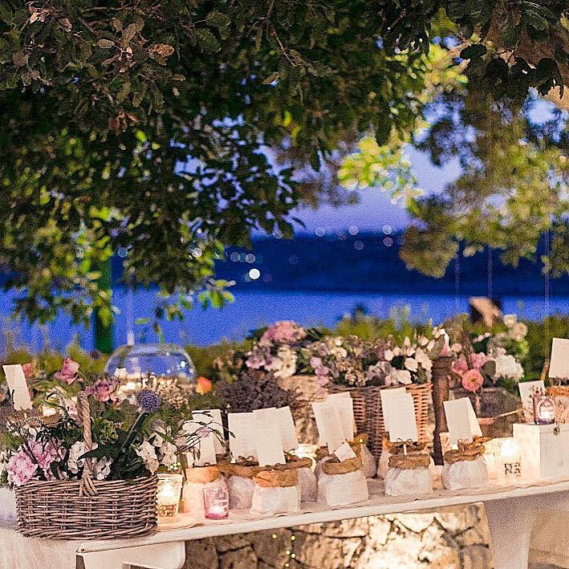
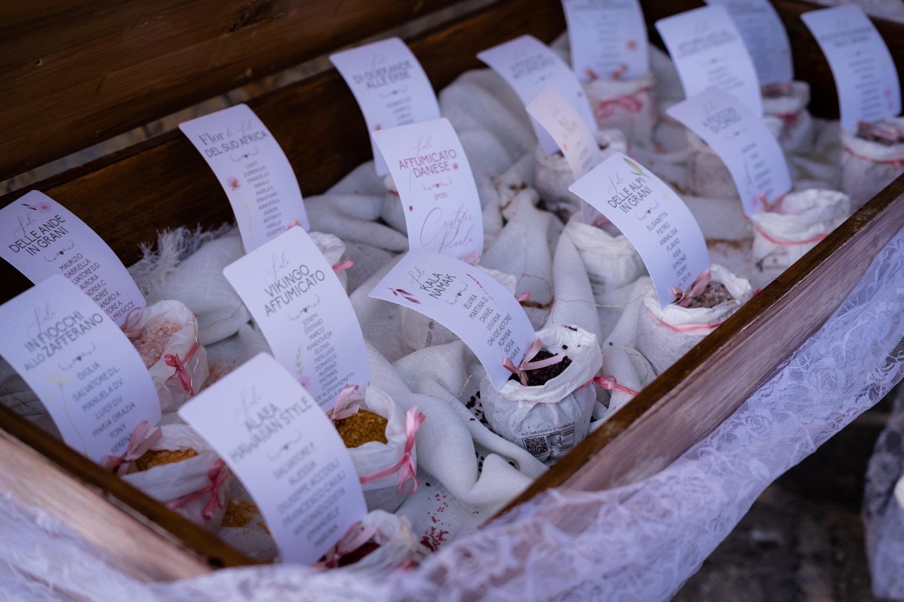

Se state pianificando il vostro matrimonio in Salento, vi starete chiedendo se sia davvero utile affidarsi a un wedding planner. Questo articolo analizza i vantaggi, i costi e le opportunità offerte da questa figura professionale, con un'attenzione particolare a chi desidera un evento eco-sostenibile.
Perché Scegliere un Wedding Planner?
Un wedding planner mette a vostra disposizione competenze consolidate e un'ampia rete di contatti nel settore. Grazie alla sua esperienza, è in grado di gestire ogni dettaglio con precisione, garantendovi un evento fluido e memorabile.
Organizzare un matrimonio può essere un'attività complessa, ricca di decisioni e dettagli da seguire. Un wedding planner si occupa di tutto, lasciandovi il tempo e la serenità per godervi al massimo il percorso verso il grande giorno.
Grazie alle sue relazioni con fornitori di fiducia — come catering, fioristi e fotografi — un wedding planner può proporvi soluzioni di qualità, spesso a prezzi competitivi. Se desiderate un matrimonio personalizzato e unico, vi aiuterà a trovare le opzioni perfette per le vostre esigenze.
Dagli inviti al menù, un wedding planner è in grado di trasformare i vostri desideri in realtà, nel rispetto dei vostri valori e del tema che avete immaginato per il vostro matrimonio.
I Costi e i Possibili Svantaggi: È Sempre la Scelta Giusta?
Avere un wedding planner comporta un costo che potrebbe incidere sul budget complessivo. Tuttavia, i benefici in termini di tranquillità e organizzazione giustificano spesso l'investimento.
Per chi preferisce gestire ogni dettaglio personalmente, delegare alcune decisioni può risultare difficile. È importante scegliere un professionista con cui condividiate la stessa visione.
Alcuni wedding planner possono proporre pacchetti poco flessibili. Per evitare questa situazione, privilegiate una figura che sappia proporre idee originali e personalizzate in base alle vostre preferenze.
Come Scegliere il Wedding Planner Ideale
Per assicurarvi che il wedding planner sia all'altezza delle vostre aspettative, valutate questi aspetti:
- Verificate i lavori precedenti per assicurarvi che il suo approccio rifletta il vostro. Se desiderate un matrimonio sostenibile, chiedete soluzioni concretamente "green".
- Fate attenzione ai partner con cui collabora, verificandone reputazione e qualità.
- Un rapporto trasparente è fondamentale: assicuratevi che ci sia un dialogo aperto su costi e modalità operative.
Conclusioni
Affidarsi a un wedding planner può semplificare enormemente l'organizzazione del matrimonio, eliminando lo stress e garantendo un evento curato nei minimi dettagli. Scegliete con cura un professionista che condivida i vostri valori e il vostro stile, per vivere un matrimonio unico, sostenibile e senza pensieri.
Vuoi sapere di più su come organizziamo i matrimoni a Cala dei Balcani?
Il nostro team è sempre disponibile per una consulenza personalizzata — senza impegno.

